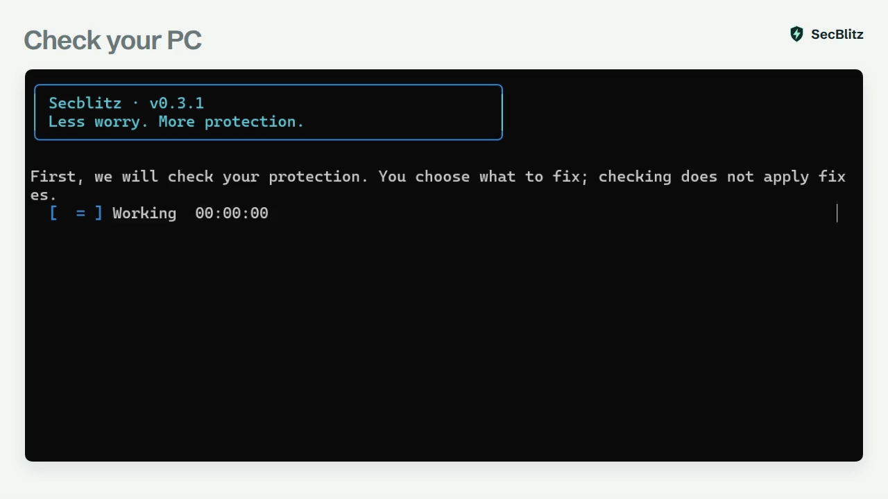

A safer PC. Without headaches.
Stronger Windows protection, made simple. Secblitz checks your PC, explains what needs attention, and takes care of the fixes you approve.
How it works
- 1ScanSee what needs attention, without changing settings.
- 2ChooseChoose your fixes, then review a clear recap before applying.
- 3FixApprove once. Secblitz applies your fixes and checks the results.
- 4UndoChanged your mind? Review saved settings to restore.

What it checks
Recognizes protection Windows already provides, so you avoid unnecessary changes.
-
Keep your protection switched on
Check that Microsoft Defender is watching for threats and scanning your downloads.
-
Keep unwanted connections out
Check your firewall protection at home, at work and on public networks.
-
Stay in control of app permissions
Brings back the Windows prompt that asks before an app gets full control.
-
Protect your sign-in
Strengthen sign-in settings that could expose your account to others on your network.
-
Limit what installers can change
Fix settings that give installers too much control or leave Windows Update open to unwanted changes.
-
Ready before repairs
Check storage, power and whether Windows needs a restart before you begin repairs. These checks don't change settings.
Useful extras, built in
Update your protection, check for threats and build better password habits. You choose which tools to use.
- Update Defender
- Request the latest protection updates from Microsoft.
- Quick virus scan
- Start a Microsoft Defender quick scan, then read the results in Windows Security.
- Local security monitor
- Keep an eye on your protection with reports stored on your PC. The monitor doesn't change settings.
- Password generator
- Generate a strong password to save in your password manager.
- Password manager
- Install Bitwarden, a free password manager, with your approval.
Questions
Does it replace antivirus?
No. Secblitz works with Windows protection to help you keep its security settings in good shape.
Do I choose the changes?
Yes. A scan only checks your settings. You choose the fixes and approve them before anything changes.
Can I undo changes?
Undo can restore settings Secblitz saved, though some changes may need review. It doesn't reverse updates, app installations or changes you make outside Secblitz.
Does Secblitz update itself?
When enabled, Secblitz checks every hour and verifies updates before installing. It won't force the app to close or restart your PC. Automatic updates are on by default; you can turn them off during setup.
Is my data private?
Your checks, change history and monitor reports stay on your PC. Secblitz has no telemetry. Updates and optional downloads use the internet.
Which Windows versions work?
Secblitz has been tested on Windows 11, 64-bit. Windows 10 testing is still pending.
Start with a check.
Nothing changes until you choose.
Get Secblitz for WindowsDownload details
Version 0.6.1 · 4.3 MB · Unsigned installer
Windows may show an unknown-publisher warning.
b7680b902cd968d21178fa464fd5f97e01fb01bbbe17f958b696959b88929f20